#11184 Maria Stuart, Königin von Schottland
Alternativ: Mary Queen of Scots (Englischer Titel)
Auszeichnungen: für 2 Oscars nominiert
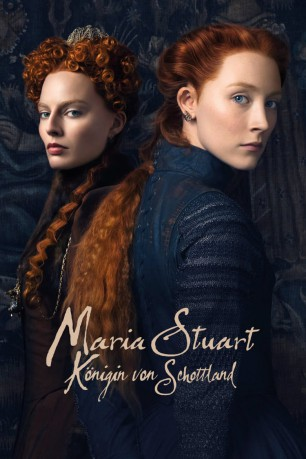 
 IMDB-Wertung: 6.3 / 10
IMDB-Wertung: 6.3 / 10  Metascore: 60
Metascore: 60 
Im Jahr 1559 wird Maria Stuart mit 16 Jahren zur Königin von Frankreich und als nur zwei Jahre später ihr Ehemann Franz II. stirbt und sie zur Witwe wird, weigert sie sich, erneut zu heiraten. Stattdessen beschließt sie, in ihre Heimat Schottland zurückzukehren und den Thron zu besteigen, der rechtmäßig ihr gehört. Doch die schottische Krone trägt mittlerweile Elisabeth I. die zugleich auch Königin von England ist und den Thron keineswegs an ihre Rivalin abtreten möchte. Es kommt zu einem Machtkampf zwischen den beiden Monarchinnen, der eskaliert, als Maria beschließt, ihren Anspruch auf den englischen Thron geltend zu machen. Doch beide Königinnen werden auch in die zahlreichen politischen Intrigen und bewaffneten Konflikte ihrer Zeit verwickelt…
Jahr: 2018
Dauer: 123 Minuten
FSK: 12
Land: England Studio: UPITonspuren: DD5.1 - ,
Untertitel: Deutsch,
Auflösung: 1080p (1920x808) Größe: 8468 MB
Genre: Drama, Geschichte, Biographie
Regisseur: Josie Rourke
Drehbuch: Beau Willimon, John Guy
Soundtrack: Max Richter
Darsteller:
- Angela Bain als Snuffer Woman
- Richard Cant als Thomas Andrews
- Thom Petty als Earl of Shrewsbury
 Saoirse Ronan als Mary Stuart
Saoirse Ronan als Mary Stuart- Izuka Hoyle als Mary Seton
 Margot Robbie als Queen Elizabeth I
Margot Robbie als Queen Elizabeth I- 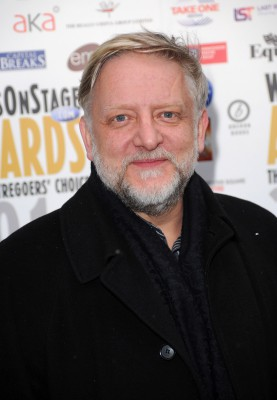 Simon Russell Beale als Robert Beale
 Maria Dragus als Mary Fleming
Maria Dragus als Mary Fleming- Eileen O'Higgins als Mary Beaton
- Liah O'Prey als Mary Livingston
- Greg Miller Burns als Thomas Hepburn
- Aneurin Pascoe als John Hepburn
- Adrian Derrick-Palmer als George Dalgleish
- 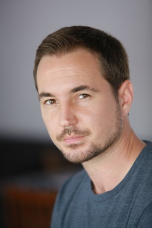 Martin Compston als Lord Bothwell
- 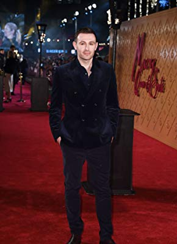 James McArdle als James, Earl of Moray
- 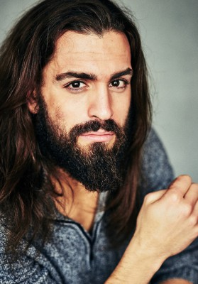 Adam Bond als Sir William Douglas
- Katharine O'Donnelly als Young Holyrood Servant
- 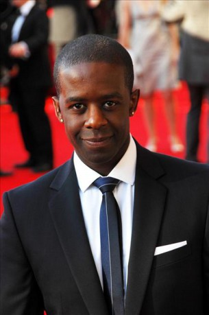 Adrian Lester als Lord Randolph
 Guy Pearce als William Cecil
Guy Pearce als William Cecil- 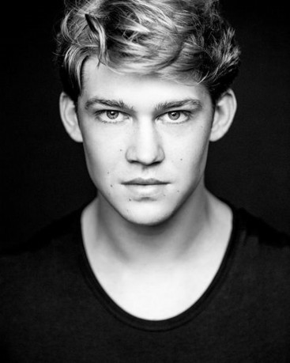 Joe Alwyn als Robert Dudley
- 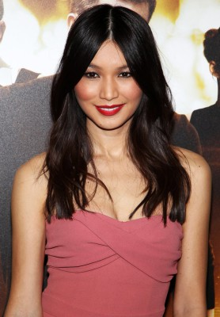 Gemma Chan als Bess of Hardwick
- Georgia Burnell als Kate Carey
- Luke Hobson als Henry Killigrew
- Ben Wiggins als John Tamworth
- Eldredd Wolf als William Killigrew
- Alan Turkington als Thomas Jenye
- 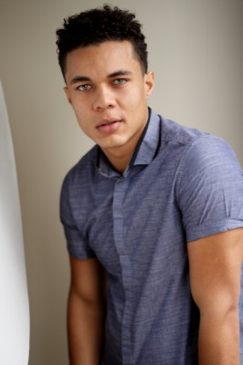 Ismael Cruz Cordova als David Rizzio
- 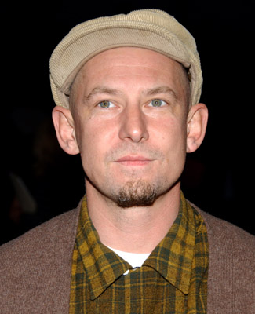 Ian Hart als Lord Maitland
- 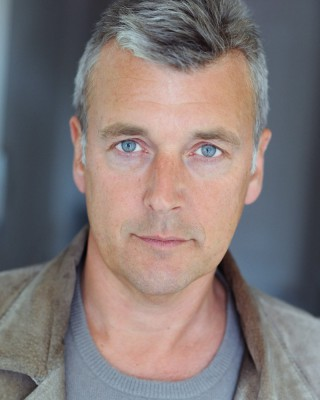 Euan Macnaughton als William Kirkcaldy of Grange
- Nathen East als Andrew Ker of Fawdonside
- David Tennant als John Knox
- Daniel Booroff als Knox's Secretary
- 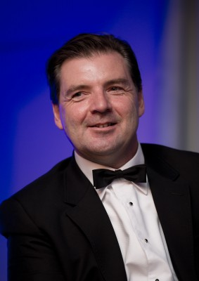 Brendan Coyle als Earl of Lennox
 Jack Lowden als Henry Darnley
Jack Lowden als Henry Darnley- Sean Buchanan als Francis Yaxley
- Jordan Turk als James MacDonald
- Scot Greenan als Hector MacLean
- Ed Jones als William Taylor
- Karen Dunbar als Commoner
- John Stahl als Fisherman
- Kadiff Kirwan als Attaché
- Ian Hallard als Sir Richard Knightley
- Andrew Rothney als King James I
- Benny Bereal als Mary's Servant (uncredited)
- Ewan Borthwick als Moray Soldier (uncredited)
- Benjamin Coakley als Servant (uncredited)
- Eric Coco als Scottish Church Attendee (uncredited)
- Mark Anthony Dawson als Murray Knight (uncredited)
- Nick Field als Nobleman (uncredited)
- Philip Gascoyne als English Nobleman (uncredited)
Datei: X:\2018(G-M)\Maria Stuart, Königin von Schottland (2018, FSK12, 1920x808).mkv seit 09.05.2019
Festplatte: HD 2018(G-Z)-2019(A-Z)
 Es gibt insgesamt 138 Filme in der Gruppe '2018(G-M)'
Es gibt insgesamt 138 Filme in der Gruppe '2018(G-M)'